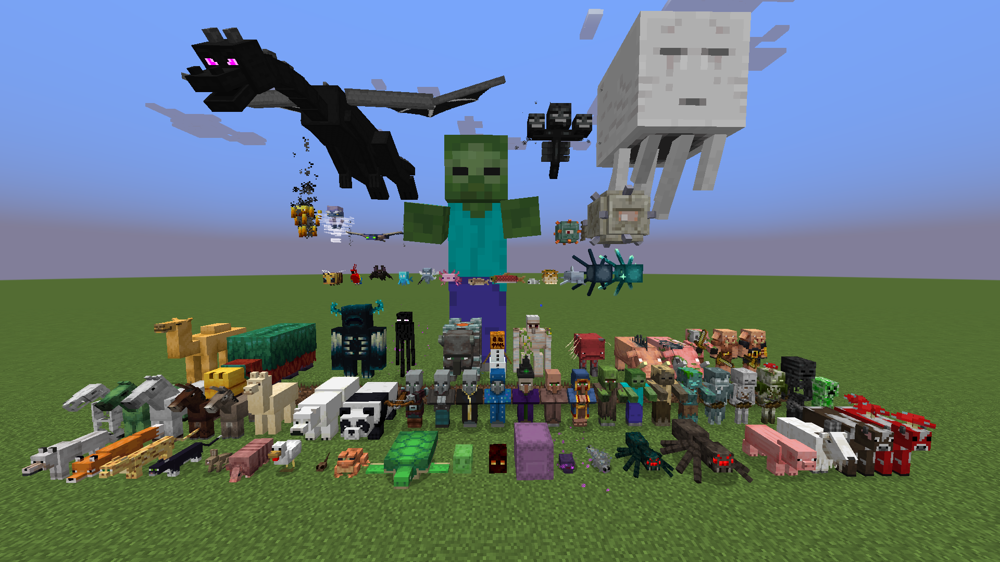

Todos os personagens/criaturas do jogo
Steve e Alex
Steve/Alex são os protagonistas do jogo Minecraft. Controlados pelo jogador, suas ações, comportamento, intenções e métodos são completamente decididos por estes, podendo fazer com que Steve/Alex variem de corajosos heróis até os mais cruéis tiranos.
As criaturas passivas são criaturas inofensivas e pacíficas que não atacam o jogador, mesmo quando provocados, e geralmente fogem se forem provocados. Muitos deles são aptos a reprodução e/ou domesticáveis.